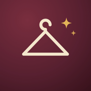

Private beta — built for one household
A stylist that already knows your closet.
Style Buddy learns what you actually wear and what you've pinned, then helps you get dressed, decide what's worth buying, and spot the gaps in your wardrobe — without re-explaining your taste every time.

What it does
Build an outfit
Give it the occasion, the weather, the activity — it puts together an outfit from what's already in the closet.
Should I buy this?
Send a photo of something you're considering. It checks it against your color palette, fit preferences, and what you already own.
Find the gaps
Asks what's missing for an occasion or season, and flags where a small purchase would unlock things you already own.
Learn your style from Pinterest
Reads a connected style board to pick up on recurring silhouettes, colors, and textures — read-only, nothing is posted on your behalf.
Who this is for
Style Buddy is a personal project, built by one household for its own use. It isn't a public product yet — there's no sign-up, no waitlist, and no plan to sell the data behind it. If that changes, this page will change with it.
Read more in the About page, or see exactly what data is collected and why in the Privacy Policy.